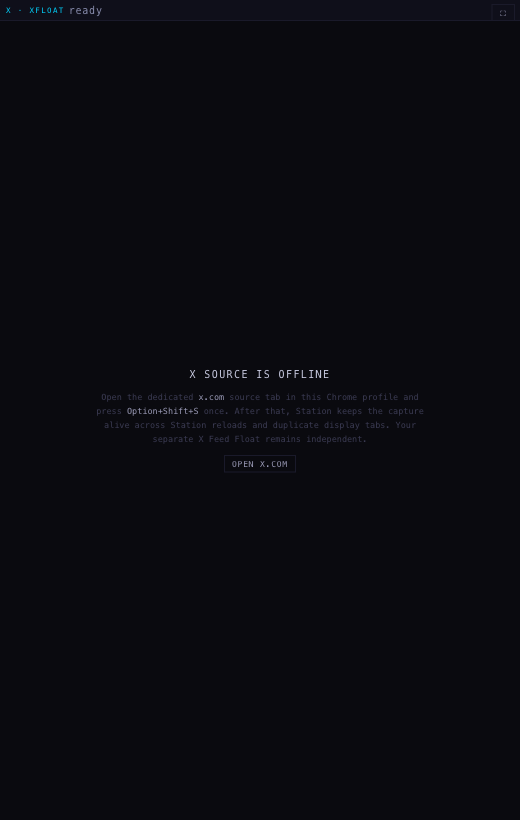
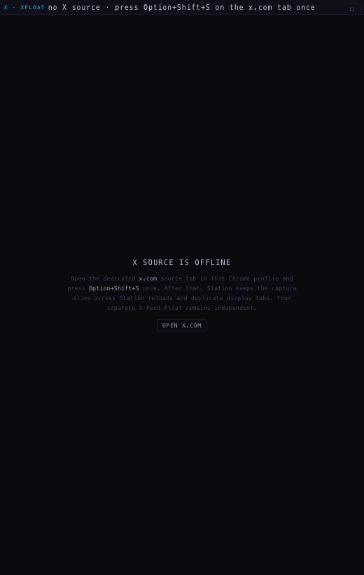
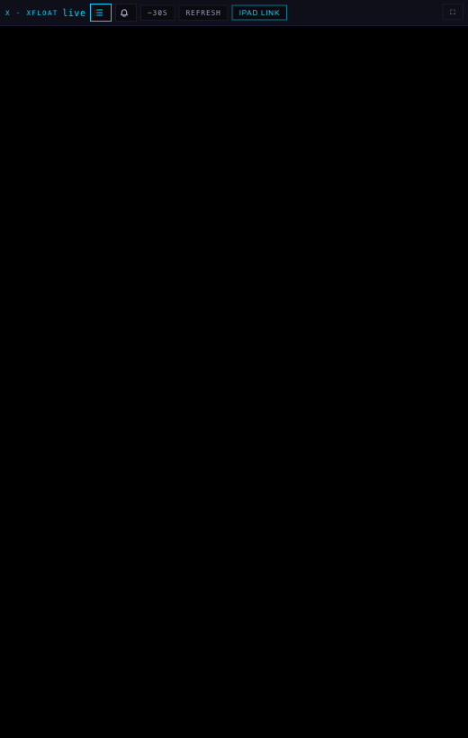
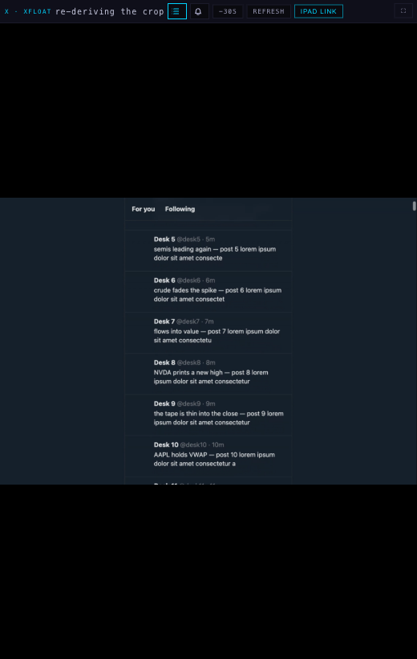

Alan, 23 September, evening: "The one that I have on the iMac is black again… it's almost there… my station as my main visibility layer, but it still requires a lot of work and you guys aren't checking it." · "I resize the window, it gets fucked. It's flimsy as shit." · "Within the same message I'm having to refresh both devices' Station again. It's horseshit."
station/x-reliability-20260923. Nothing deployed and nothing pushed.Everything below was measured in a real browser running the real bridge: Playwright's Chrome for Testing, the shipped SCINTILLA Station X Bridge 0.7.18 loaded unpacked from a byte-identical copy (background.js 37b865c6c7e6 · content.js 1d7ffa14b925 · station-bridge.js 881de97f9147), a real chrome.tabCapture-class capture of a tab on the real x.com origin, and the Station shell served from this branch. It ran in its own throwaway profile in a separate window. Alan's Brave, his profiles, his X session and his open Stations were never touched.
Two things about the rig are deliberately not production, and both are stated so no claim rests on them:
ERR_HTTP_RESPONSE_CODE_FAILURE) and a logged-out page has no timeline to measure, so the x.com origin is served a deterministic timeline carrying the landmarks the bridge measures — primaryColumn, the tab strip, tweets with names and text. The bridge's own content script, its own measurement code and its own relay all run unmodified."Black" is measured, not judged. Each step samples the pane's canvas twice, 500 ms apart: ink is the share of sampled pixels that are not near-black, and moving is whether the two samples differ. The fixture uses X's dim theme (#15202b), which is never pure black, so ink = 0 means the pane is showing Alan nothing. A step is BLACK when ink is at or below 1%, picture when there is ink and it moves.
| the fault | why nothing recovered |
|---|---|
| Nobody offered. A reloaded pane waits to be handed a stream. | The pane's self-heal (added in M25) returns early unless a stream is already attached: if (!s || !s.attached) return { state:"", relink:false, stalled:false }. So the one state that most needed help — holding nothing at all — was the one state it refused to act on. Recovery depended entirely on the bridge noticing, and when the bridge's answer failed the pane sat on X SOURCE IS OFFLINE until a person pressed reload. |
| The capture went black. Frames keep arriving; every one of them is empty. | Every freshness check in the pane asks "did a frame arrive", never "was there anything in it". The bridge's own background.js describes this state in as many words: "the offscreen document can still exist while Chrome has left its tab-capture video black". The pane's status word stayed live for as long as you cared to watch. |
| The crop missed the frame. | The crop is measured on the X tab in CSS pixels and mapped through the capture's pixel size. When those two disagree — which a resize opens, because the source re-lays-out its column for the new shape — the mapped region falls outside the frame, and the draw did ctx.fillStyle="#000"; ctx.fillRect(...) and then skipped the picture. A stream with no crop yet painted nothing at all, for the same reason. |
| The Station reloaded it. | The deck's self-update watched the X shell's version and treated a change as a page reload: const deck = … || changed("x"). Every deploy that touched the X pane reloaded the whole Station, which dropped the capture, which needed the recovery that did not work. |
Same script, same rig, same bridge, run once against the deployed bytes (5d30595) and once against this branch. Rows (a) to (e) are the five situations the job asked for; (f), (g) and (h) are the three faults themselves, induced deliberately, because they are what Alan actually hits and they never happen to order.
One honest wobble: the few seconds right after a reload (b) vary from run to run — the pane is black until the bridge hands it a stream, and on repeated runs of the deployed bytes that gap measured anywhere from under three seconds to more than three. What does not vary is that the deployed pane has no way to ask; the branch asks after four seconds and then every twelve.
| situation | deployed today (5d30595) | this branch | ||
|---|---|---|---|---|
| what the pane shows | what it says | what the pane shows | what it says | |
| attached and drawing | picture ink 0.973 | live | picture ink 0.973 | live |
| (a) after ten window sizes | picture ink 0.975 | live | picture ink 0.975 | live |
| (b) 3 s after a Station reload | picture ink 0.968 | live | picture ink 0.971 | live |
| (b) 15 s after a Station reload | picture ink 0.975 | live | picture ink 0.975 | live |
| (c) 15 s after the self-update reloads the X shell | picture ink 0.952 | live | picture ink 0.952 | live |
| (d) the pane's tab hidden for 6 s | picture ink 0.905 | live | picture ink 0.905 | live |
| (d) 4 s after it comes back | picture ink 0.882 | live | picture ink 0.882 | live |
| (f) the capture goes black · 3 s | BLACK ink 0 | live | BLACK ink 0 | live |
| (f) · 11 s | BLACK ink 0 | live | BLACK ink 0 | live |
| (f) · 51 s | BLACK ink 0 | live | BLACK ink 0 | the X capture is black · press Option+Shift+S on the x.com tab once |
| (f) the capture comes back | picture ink 0.557 | live | picture ink 0.58 | live |
| (g) reloaded, nobody answers · 8 s | BLACK ink 0 | ready | BLACK ink 0 | asking the X source for the picture · 8s |
| (g) · 26 s | BLACK ink 0 | ready | BLACK ink 0 | asking the X source for the picture · 27s |
| (g) · 71 s | BLACK ink 0 | ready | BLACK ink 0 | no X source · press Option+Shift+S on the x.com tab once |
| (g) the source can answer again | picture ink 0.552 | live | picture ink 0.552 | live |
| (h) a crop that misses the frame · 3 s | BLACK ink 0 | live | picture ink 0.452 | live |
| (h) · 12 s | BLACK ink 0 | live | picture ink 0.452 | re-deriving the crop (whole frame) |
| (h) real crops again | picture ink 0.441 | live | picture ink 0.441 | live |
before: real tab capture of the x.com tab (2600x1374) · after: real tab capture of the x.com tab (1960x1346)




| before | after | |
|---|---|---|
| a pane holding nothing | waits to be offered a stream, for ever | asks for one after 4 s, then every 12 s, six times; each ask is the bridge's own XFF_STATION_RECONNECT_VIEWER |
| the health watcher | starts when a stream attaches, stops when it goes | runs for the life of the document — an empty pane is exactly what needs watching |
| what counts as alive | a frame or a crop arrived recently | that, plus what is actually in the frame: one 24×16 sample a second of the incoming video, of the mapped crop region, and of the canvas |
| a black capture | reported as live | named after 6 s, relinked three times, and then the one instruction that works: the X capture is black · press Option+Shift+S on the x.com tab once |
| a crop that misses the frame | black fill | the whole frame is drawn instead, immediately; the pane says re-deriving the crop and asks the source for geometry for this exact pane size; the fallback retires itself the moment the mapped region has a picture in it again |
| a stream with no crop | painted nothing | draws the frame |
| a new X shell (deploy) | reloaded the whole Station page | reloads that frame only, and only while the X pane is not live; while it is live the update waits and is not forgotten |
| a new deck (deploy) | reloaded after 2 idle minutes with no video on stage | the same, plus: not while the X pane is live — bounded to 30 minutes, after which it does update, because by then the pane re-attaches on its own |
| the iPad Companion and iOS | — | never enter the asking branch: no extension there, and no Mac keyboard to press |
| diagnosis | none | window.__SCINTILLA_X_LINK reports attached, ink in the frame / crop / canvas, the fallback, the retry count and the age of the last frame and crop |
The bridge is untouched. Every message the pane sends already existed in 0.7.18, so nothing has to be reinstalled on the iMac or the MacBook.
The deck can only hold a reload if the pane tells it that it is live, and that message has to cross an iframe boundary the main rig never exercises (there the pane is top-level, so the heartbeat is a no-op). A second check mounts the real shell in a real iframe with the real bridge and a real capture (2624x1696): the host received 23 beats. Reaches the deck while the pane is showing the feed: yes. Reports live but picture:false once the capture goes black under it: yes.
last beats while showing: [{"live": true, "picture": true, "at": 1790210679670}, {"live": true, "picture": true, "at": 1790210680670}, {"live": true, "picture": true, "at": 1790210681670}]
last beats while black: [{"live": true, "picture": false, "at": 1790210685667}, {"live": true, "picture": false, "at": 1790210686674}, {"live": true, "picture": false, "at": 1790210687670}]
The same script then held the pane open for 34 minutes, resizing the window through ten shapes, one a minute, with a measurement after each resize. 34 of 34 measurements were a moving picture. The weakest was ink 0.139 at e-soak-min-1. The stream was renegotiated 59 times during the soak. Everything the pane said across the whole run: live · re-deriving the crop · ready. Crops kept arriving throughout (858 at the first measurement, 17586 at the last).
After this deploys: nothing.
the X capture is black · press Option+Shift+S on the x.com tab once, it means what it says. Chrome hands a tab capture only to an extension a person has just invoked, so no web page can rebuild a dead capture by itself — the pane can name it, and that is what it now does instead of showing a black box and the word "live". Every other failure here recovers without him.chrome.tabCapture.getMediaStreamId refuses anything else, and the bridge only calls it from a toolbar click. The pane now says so in one line instead of lying. A future bridge 0.7.19 could retry the capture itself using the activeTab grant the first click already left behind — that is a proposal, not done here, because it means reinstalling the extension on two Macs.| file | what |
|---|---|
station-shells/x-v2/index.html | the pane: ink sampling, the three-way diagnosis, the full-frame fallback, the asking watcher, the heartbeat to the deck |
deck/index.html | self-update: the X shell reloads its own frame, and a live X pane holds a page reload |
tests/station-x-reliability.test.mjs | 18 tests, one per branch of the decision plus the wiring the browser run exercises |
tests/station-self-update.test.mjs | the update contract, including the bounded hold |
tests/station-fixes-20260923.test.mjs, tests/station-scenes.test.mjs | two existing assertions updated where M29 deliberately changes M25 behaviour, each with a note saying why |
deliverables/20260923/x-reliability/harness/ | the rig: the driver, the x.com fixture, the capture holder, the iframe heartbeat check |
deliverables/20260923/x-reliability/shots/ | every screenshot and both machine-readable logs |